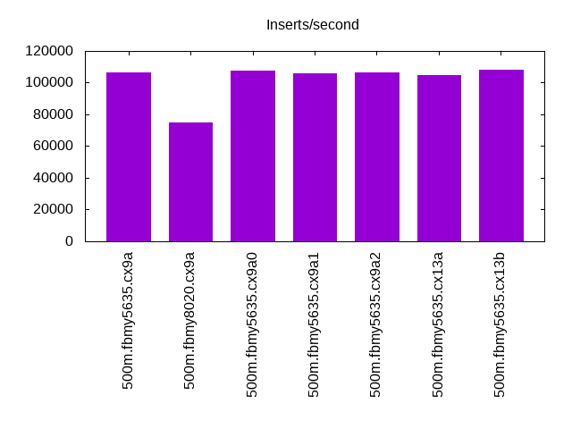
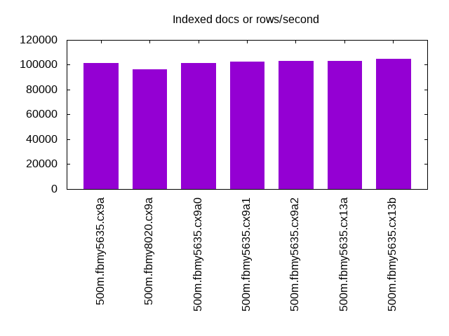
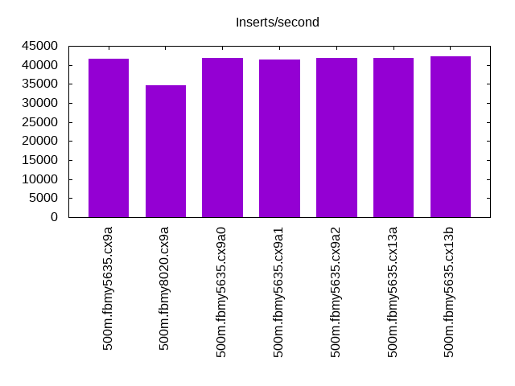
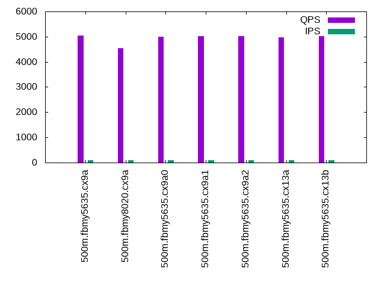
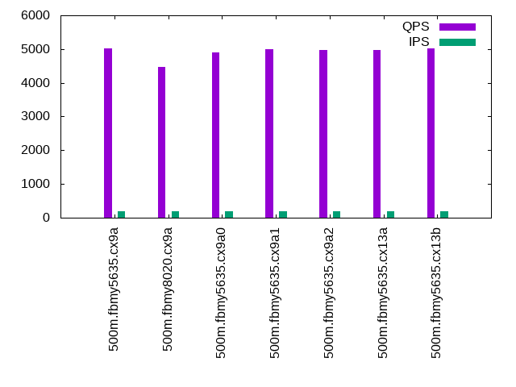
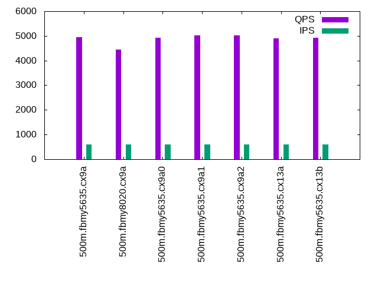
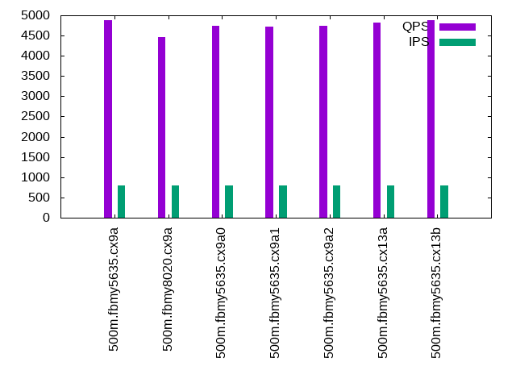
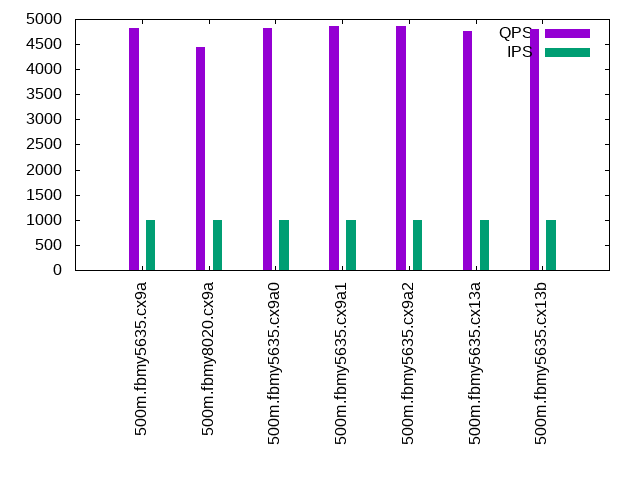

Introduction
This is a report for the insert benchmark with 500M docs and 1 client(s). It is generated by scripts (bash, awk, sed) and Tufte might not be impressed. An overview of the insert benchmark is here and a short update is here. Below, by DBMS, I mean DBMS+version.config. An example is my8020.c10b40 where my means MySQL, 8020 is version 8.0.20 and c10b40 is the name for the configuration file.
The test server is an Intel NUC with 4 cores, 16G RAM and a Samsung 970 EVO. More details are here. Clients and the DBMS share one server. The per-database configs are in the per-database subdirectories here.
The tested DBMS are:
- fbmy5635.cx9a - FB MySQL 5.6.35, MyRocks and the cx9a config
- fbmy8020.cx9a - FB MySQL 8.0.20, MyRocks and the cx9a config
- fbmy5635.cx9a0 - FB MySQL 5.6.35, MyRocks and the cx9a0 config
- fbmy5635.cx9a1 - FB MySQL 5.6.35, MyRocks and the cx9a1 config
- fbmy5635.cx9a2 - FB MySQL 5.6.35, MyRocks and the cx9a2 config
- fbmy5635.cx13a - FB MySQL 5.6.35, MyRocks and the cx13a config
- fbmy5635.cx13b - FB MySQL 5.6.35, MyRocks and the cx13b config
Contents
- Summary
- l.i0: load without secondary indexes
- l.x: create secondary indexes
- l.i1: continue load after secondary indexes created
- q100.2: range queries with 100 insert/s per client, 2nd loop
- q200.2: range queries with 200 insert/s per client, 2nd loop
- q400.2: range queries with 400 insert/s per client, 2nd loop
- q600.2: range queries with 600 insert/s per client, 2nd loop
- q800.2: range queries with 800 insert/s per client, 2nd loop
- q1000.2: range queries with 1000 insert/s per client, 2nd loop
Summary
The numbers are inserts/s for l.i0 and l.i1, indexed docs (or rows) /s for l.x and queries/s for q*.2. The values are the average rate over the entire test for inserts (IPS) and queries (QPS). The range of values for IPS and QPS is split into 3 parts: bottom 25%, middle 50%, top 25%. Values in the bottom 25% have a red background, values in the top 25% have a green background and values in the middle have no color. A gray background is used for values that can be ignored because the DBMS did not sustain the target insert rate. Red backgrounds are not used when the minimum value is within 80% of the max value.
| dbms | l.i0 | l.x | l.i1 | q100.2 | q200.2 | q400.2 | q600.2 | q800.2 | q1000.2 |
|---|---|---|---|---|---|---|---|---|---|
| 500m.fbmy5635.cx9a | 106270 | 101502 | 41667 | 5044 | 5008 | 4965 | 4949 | 4880 | 4815 |
| 500m.fbmy8020.cx9a | 75030 | 96544 | 34602 | 4531 | 4473 | 4447 | 4454 | 4464 | 4446 |
| 500m.fbmy5635.cx9a0 | 107550 | 101255 | 41841 | 4991 | 4909 | 4770 | 4916 | 4746 | 4820 |
| 500m.fbmy5635.cx9a1 | 106112 | 102458 | 41494 | 5022 | 4994 | 4840 | 5019 | 4730 | 4860 |
| 500m.fbmy5635.cx9a2 | 106315 | 103007 | 41841 | 5016 | 4974 | 4801 | 5023 | 4747 | 4856 |
| 500m.fbmy5635.cx13a | 104800 | 102944 | 41841 | 4976 | 4980 | 4930 | 4906 | 4830 | 4756 |
| 500m.fbmy5635.cx13b | 108015 | 104865 | 42194 | 5012 | 5027 | 4959 | 4924 | 4876 | 4794 |
This lists the average rate of inserts/s for the tests that do inserts concurrent with queries. For such tests the query rate is listed in the table above. The read+write tests are setup so that the insert rate should match the target rate every second. Cells that are not at least 95% of the target have a red background to indicate a failure to satisfy the target.
| dbms | q100.2 | q200.2 | q400.2 | q600.2 | q800.2 | q1000.2 |
|---|---|---|---|---|---|---|
| fbmy5635.cx9a | 100 | 200 | 399 | 599 | 799 | 998 |
| fbmy8020.cx9a | 100 | 200 | 399 | 599 | 799 | 998 |
| fbmy5635.cx9a0 | 100 | 200 | 399 | 599 | 799 | 998 |
| fbmy5635.cx9a1 | 100 | 200 | 399 | 599 | 799 | 998 |
| fbmy5635.cx9a2 | 100 | 200 | 399 | 599 | 799 | 998 |
| fbmy5635.cx13a | 100 | 200 | 399 | 599 | 799 | 998 |
| fbmy5635.cx13b | 100 | 200 | 399 | 599 | 799 | 998 |
| target | 100 | 200 | 400 | 600 | 800 | 1000 |
l.i0
l.i0: load without secondary indexes. Graphs for performance per 1-second interval are here.
Average throughput:
Insert response time histogram: each cell has the percentage of responses that take <= the time in the header and max is the max response time in seconds. For the max column values in the top 25% of the range have a red background and in the bottom 25% of the range have a green background. The red background is not used when the min value is within 80% of the max value.
| dbms | 256us | 1ms | 4ms | 16ms | 64ms | 256ms | 1s | 4s | 16s | gt | max |
|---|---|---|---|---|---|---|---|---|---|---|---|
| fbmy5635.cx9a | 97.901 | 2.049 | 0.046 | nonzero | 0.004 | 0.133 | |||||
| fbmy8020.cx9a | 99.817 | 0.163 | 0.020 | nonzero | 0.093 | ||||||
| fbmy5635.cx9a0 | 98.244 | 1.695 | 0.056 | 0.001 | 0.004 | 0.167 | |||||
| fbmy5635.cx9a1 | 97.730 | 2.217 | 0.049 | nonzero | 0.004 | 0.179 | |||||
| fbmy5635.cx9a2 | 97.837 | 2.102 | 0.057 | nonzero | 0.004 | 0.192 | |||||
| fbmy5635.cx13a | 97.132 | 2.815 | 0.049 | nonzero | 0.004 | 0.132 | |||||
| fbmy5635.cx13b | 98.605 | 1.341 | 0.050 | nonzero | 0.004 | 0.121 |
Performance metrics for the DBMS listed above. Some are normalized by throughput, others are not. Legend for results is here.
ips qps rps rmbps wps wmbps rpq rkbpq wpi wkbpi csps cpups cspq cpupq dbgb1 dbgb2 rss maxop p50 p99 tag 106270 0 0 0.0 50.4 18.9 0.000 0.000 0.000 0.182 10891 47.4 0.102 18 16.2 28.5 2.5 0.133 107086 93398 500m.fbmy5635.cx9a 75030 0 0 0.0 50.4 16.8 0.000 0.000 0.001 0.230 8036 42.0 0.107 22 16.0 28.5 2.8 0.093 75418 67327 500m.fbmy8020.cx9a 107550 0 1 0.1 51.5 19.1 0.000 0.001 0.000 0.182 11030 47.7 0.103 18 16.2 28.5 2.5 0.167 108481 94099 500m.fbmy5635.cx9a0 106112 0 0 0.0 50.9 18.8 0.000 0.000 0.000 0.182 10891 47.4 0.103 18 16.2 28.5 2.5 0.179 106984 93001 500m.fbmy5635.cx9a1 106315 0 0 0.0 51.2 18.9 0.000 0.000 0.000 0.182 10908 47.4 0.103 18 16.2 28.5 2.5 0.192 107182 93103 500m.fbmy5635.cx9a2 104800 0 11 4.7 50.8 18.6 0.000 0.046 0.000 0.182 10585 47.0 0.101 18 16.2 28.5 2.5 0.132 105483 91998 500m.fbmy5635.cx13a 108015 0 0 0.0 53.2 19.2 0.000 0.000 0.000 0.182 10889 47.5 0.101 18 16.2 28.5 13.0 0.121 108781 94896 500m.fbmy5635.cx13b
l.x
l.x: create secondary indexes.
Average throughput:
Performance metrics for the DBMS listed above. Some are normalized by throughput, others are not. Legend for results is here.
ips qps rps rmbps wps wmbps rpq rkbpq wpi wkbpi csps cpups cspq cpupq dbgb1 dbgb2 rss maxop p50 p99 tag 101502 0 68 22.0 42.3 14.9 0.001 0.222 0.000 0.150 741 24.8 0.007 10 32.8 45.1 12.2 0.005 NA NA 500m.fbmy5635.cx9a 96544 0 75 24.5 42.9 14.2 0.001 0.260 0.000 0.150 898 25.0 0.009 10 32.6 45.0 13.2 0.015 NA NA 500m.fbmy8020.cx9a 101255 0 68 21.9 42.2 14.9 0.001 0.222 0.000 0.150 709 24.8 0.007 10 32.8 45.1 12.2 0.001 NA NA 500m.fbmy5635.cx9a0 102458 0 69 22.2 42.9 15.0 0.001 0.221 0.000 0.150 749 24.8 0.007 10 32.8 45.1 12.1 0.010 NA NA 500m.fbmy5635.cx9a1 103007 0 69 22.3 43.2 15.1 0.001 0.222 0.000 0.150 757 24.8 0.007 10 32.8 45.1 12.3 0.012 NA NA 500m.fbmy5635.cx9a2 102944 0 77 26.3 42.2 15.1 0.001 0.261 0.000 0.150 817 24.4 0.008 9 32.8 45.1 13.2 0.012 NA NA 500m.fbmy5635.cx13a 104865 0 79 26.3 49.0 15.4 0.001 0.257 0.000 0.150 651 24.5 0.006 9 32.8 45.1 12.9 0.010 NA NA 500m.fbmy5635.cx13b
l.i1
l.i1: continue load after secondary indexes created. Graphs for performance per 1-second interval are here.
Average throughput:
Insert response time histogram: each cell has the percentage of responses that take <= the time in the header and max is the max response time in seconds. For the max column values in the top 25% of the range have a red background and in the bottom 25% of the range have a green background. The red background is not used when the min value is within 80% of the max value.
| dbms | 256us | 1ms | 4ms | 16ms | 64ms | 256ms | 1s | 4s | 16s | gt | max |
|---|---|---|---|---|---|---|---|---|---|---|---|
| fbmy5635.cx9a | 4.723 | 95.168 | 0.100 | 0.009 | 0.001 | 0.074 | |||||
| fbmy8020.cx9a | 99.847 | 0.131 | 0.022 | 0.052 | |||||||
| fbmy5635.cx9a0 | 4.330 | 95.578 | 0.088 | 0.005 | 0.058 | ||||||
| fbmy5635.cx9a1 | 4.121 | 95.789 | 0.084 | 0.006 | 0.001 | 0.073 | |||||
| fbmy5635.cx9a2 | 4.431 | 95.469 | 0.096 | 0.003 | 0.001 | 0.070 | |||||
| fbmy5635.cx13a | 4.160 | 95.744 | 0.085 | 0.011 | 0.001 | 0.070 | |||||
| fbmy5635.cx13b | 5.375 | 94.532 | 0.084 | 0.009 | 0.056 |
Performance metrics for the DBMS listed above. Some are normalized by throughput, others are not. Legend for results is here.
ips qps rps rmbps wps wmbps rpq rkbpq wpi wkbpi csps cpups cspq cpupq dbgb1 dbgb2 rss maxop p50 p99 tag 41667 0 6 0.7 98.9 36.4 0.000 0.017 0.002 0.895 9025 44.0 0.217 42 33.8 47.3 12.1 0.074 41454 36510 500m.fbmy5635.cx9a 34602 0 0 0.0 69.8 23.8 0.000 0.000 0.002 0.705 7640 41.4 0.221 48 33.7 47.4 12.4 0.052 34612 30716 500m.fbmy8020.cx9a 41841 0 54 6.8 93.4 32.9 0.001 0.166 0.002 0.805 8960 42.1 0.214 40 33.9 47.5 12.0 0.058 41821 33762 500m.fbmy5635.cx9a0 41494 0 6 0.7 87.6 30.4 0.000 0.017 0.002 0.751 8840 41.1 0.213 40 33.7 47.3 12.1 0.073 41754 32914 500m.fbmy5635.cx9a1 41841 0 6 0.7 88.7 31.0 0.000 0.017 0.002 0.759 8901 41.5 0.213 40 33.7 47.3 12.1 0.070 41803 32714 500m.fbmy5635.cx9a2 41841 0 45 16.1 104.7 37.1 0.001 0.393 0.003 0.908 8269 44.1 0.198 42 33.8 47.3 13.1 0.070 41255 38323 500m.fbmy5635.cx13a 42194 0 29 11.2 108.3 37.1 0.001 0.271 0.003 0.901 8357 43.9 0.198 42 33.8 47.3 13.0 0.056 41805 37559 500m.fbmy5635.cx13b
q100.2
q100.2: range queries with 100 insert/s per client, 2nd loop. Graphs for performance per 1-second interval are here.
Average throughput:
Query response time histogram: each cell has the percentage of responses that take <= the time in the header and max is the max response time in seconds. For max values in the top 25% of the range have a red background and in the bottom 25% of the range have a green background. The red background is not used when the min value is within 80% of the max value.
| dbms | 256us | 1ms | 4ms | 16ms | 64ms | 256ms | 1s | 4s | 16s | gt | max |
|---|---|---|---|---|---|---|---|---|---|---|---|
| fbmy5635.cx9a | 98.343 | 1.657 | nonzero | nonzero | 0.014 | ||||||
| fbmy8020.cx9a | 97.772 | 2.227 | nonzero | nonzero | 0.015 | ||||||
| fbmy5635.cx9a0 | 98.536 | 1.464 | nonzero | nonzero | 0.015 | ||||||
| fbmy5635.cx9a1 | 97.647 | 2.353 | nonzero | nonzero | 0.015 | ||||||
| fbmy5635.cx9a2 | 98.146 | 1.853 | nonzero | nonzero | 0.015 | ||||||
| fbmy5635.cx13a | 97.835 | 2.162 | 0.003 | 0.001 | nonzero | 0.017 | |||||
| fbmy5635.cx13b | 97.716 | 2.281 | 0.002 | nonzero | 0.015 |
Insert response time histogram: each cell has the percentage of responses that take <= the time in the header and max is the max response time in seconds. For max values in the top 25% of the range have a red background and in the bottom 25% of the range have a green background. The red background is not used when the min value is within 80% of the max value.
| dbms | 256us | 1ms | 4ms | 16ms | 64ms | 256ms | 1s | 4s | 16s | gt | max |
|---|---|---|---|---|---|---|---|---|---|---|---|
| fbmy5635.cx9a | 0.917 | 99.083 | 0.004 | ||||||||
| fbmy8020.cx9a | 99.917 | 0.083 | 0.008 | ||||||||
| fbmy5635.cx9a0 | 1.556 | 98.417 | 0.028 | 0.004 | |||||||
| fbmy5635.cx9a1 | 1.361 | 98.583 | 0.056 | 0.014 | |||||||
| fbmy5635.cx9a2 | 1.139 | 98.778 | 0.083 | 0.014 | |||||||
| fbmy5635.cx13a | 0.389 | 99.556 | 0.056 | 0.014 | |||||||
| fbmy5635.cx13b | 0.861 | 99.111 | 0.028 | 0.004 |
Performance metrics for the DBMS listed above. Some are normalized by throughput, others are not. Legend for results is here.
ips qps rps rmbps wps wmbps rpq rkbpq wpi wkbpi csps cpups cspq cpupq dbgb1 dbgb2 rss maxop p50 p99 tag 100 5044 0 0.0 4.5 0.5 0.000 0.000 0.045 5.256 19384 26.2 3.843 208 33.9 47.5 11.8 0.014 5050 4938 500m.fbmy5635.cx9a 100 4531 0 0.0 4.5 0.5 0.000 0.000 0.045 5.265 17574 27.3 3.878 241 33.8 47.6 12.2 0.015 4539 4411 500m.fbmy8020.cx9a 100 4991 0 0.0 3.4 0.1 0.000 0.000 0.034 1.060 19159 26.0 3.839 208 33.9 47.5 11.9 0.015 4987 4906 500m.fbmy5635.cx9a0 100 5022 0 0.0 3.4 0.1 0.000 0.000 0.034 1.061 19283 26.1 3.839 208 33.9 47.5 11.9 0.015 5034 4938 500m.fbmy5635.cx9a1 100 5016 0 0.0 3.4 0.1 0.000 0.000 0.034 1.060 19261 26.2 3.840 209 33.9 47.5 11.9 0.015 5018 4939 500m.fbmy5635.cx9a2 100 4976 30 0.5 4.6 0.5 0.006 0.101 0.046 5.255 19161 26.3 3.851 211 33.9 47.5 12.9 0.017 5002 4347 500m.fbmy5635.cx13a 100 5012 25 0.4 4.4 0.5 0.005 0.078 0.044 5.256 19286 26.3 3.848 210 33.9 47.5 12.8 0.015 5034 4651 500m.fbmy5635.cx13b
q200.2
q200.2: range queries with 200 insert/s per client, 2nd loop. Graphs for performance per 1-second interval are here.
Average throughput:
Query response time histogram: each cell has the percentage of responses that take <= the time in the header and max is the max response time in seconds. For max values in the top 25% of the range have a red background and in the bottom 25% of the range have a green background. The red background is not used when the min value is within 80% of the max value.
| dbms | 256us | 1ms | 4ms | 16ms | 64ms | 256ms | 1s | 4s | 16s | gt | max |
|---|---|---|---|---|---|---|---|---|---|---|---|
| fbmy5635.cx9a | 98.656 | 1.344 | nonzero | 0.002 | |||||||
| fbmy8020.cx9a | 97.901 | 2.099 | nonzero | nonzero | 0.006 | ||||||
| fbmy5635.cx9a0 | 98.550 | 1.449 | nonzero | 0.002 | |||||||
| fbmy5635.cx9a1 | 98.387 | 1.613 | nonzero | 0.003 | |||||||
| fbmy5635.cx9a2 | 98.519 | 1.481 | nonzero | 0.003 | |||||||
| fbmy5635.cx13a | 98.634 | 1.366 | nonzero | 0.003 | |||||||
| fbmy5635.cx13b | 98.523 | 1.476 | nonzero | 0.003 |
Insert response time histogram: each cell has the percentage of responses that take <= the time in the header and max is the max response time in seconds. For max values in the top 25% of the range have a red background and in the bottom 25% of the range have a green background. The red background is not used when the min value is within 80% of the max value.
| dbms | 256us | 1ms | 4ms | 16ms | 64ms | 256ms | 1s | 4s | 16s | gt | max |
|---|---|---|---|---|---|---|---|---|---|---|---|
| fbmy5635.cx9a | 99.958 | 0.042 | 0.005 | ||||||||
| fbmy8020.cx9a | 99.875 | 0.111 | 0.014 | 0.018 | |||||||
| fbmy5635.cx9a0 | 99.931 | 0.069 | 0.004 | ||||||||
| fbmy5635.cx9a1 | 99.931 | 0.069 | 0.007 | ||||||||
| fbmy5635.cx9a2 | 99.972 | 0.028 | 0.004 | ||||||||
| fbmy5635.cx13a | 99.944 | 0.056 | 0.004 | ||||||||
| fbmy5635.cx13b | 99.944 | 0.056 | 0.004 |
Performance metrics for the DBMS listed above. Some are normalized by throughput, others are not. Legend for results is here.
ips qps rps rmbps wps wmbps rpq rkbpq wpi wkbpi csps cpups cspq cpupq dbgb1 dbgb2 rss maxop p50 p99 tag 200 5008 0 0.0 3.1 0.0 0.000 0.000 0.016 0.215 19226 26.0 3.839 208 33.9 47.6 12.0 0.002 5005 4939 500m.fbmy5635.cx9a 200 4473 0 0.0 3.1 0.0 0.000 0.000 0.016 0.217 17333 26.9 3.875 241 33.8 47.7 12.3 0.006 4475 4396 500m.fbmy8020.cx9a 200 4909 0 0.0 3.1 0.0 0.000 0.000 0.016 0.215 18852 26.0 3.840 212 33.9 47.6 12.0 0.002 4907 4842 500m.fbmy5635.cx9a0 200 4994 0 0.0 3.1 0.0 0.000 0.000 0.016 0.215 19178 26.1 3.840 209 33.9 47.6 12.0 0.003 5002 4923 500m.fbmy5635.cx9a1 200 4974 0 0.0 3.1 0.0 0.000 0.000 0.016 0.215 19097 26.1 3.840 210 33.9 47.6 12.0 0.003 4971 4906 500m.fbmy5635.cx9a2 200 4980 0 0.0 3.1 0.0 0.000 0.000 0.016 0.215 19125 26.1 3.840 210 33.9 47.6 13.0 0.003 4986 4906 500m.fbmy5635.cx13a 200 5027 0 0.0 3.1 0.0 0.000 0.000 0.016 0.214 19303 26.3 3.840 209 33.9 47.6 13.0 0.003 5034 4970 500m.fbmy5635.cx13b
q400.2
q400.2: range queries with 400 insert/s per client, 2nd loop. Graphs for performance per 1-second interval are here.
Average throughput:

Query response time histogram: each cell has the percentage of responses that take <= the time in the header and max is the max response time in seconds. For max values in the top 25% of the range have a red background and in the bottom 25% of the range have a green background. The red background is not used when the min value is within 80% of the max value.
| dbms | 256us | 1ms | 4ms | 16ms | 64ms | 256ms | 1s | 4s | 16s | gt | max |
|---|---|---|---|---|---|---|---|---|---|---|---|
| fbmy5635.cx9a | 98.380 | 1.619 | 0.001 | nonzero | 0.005 | ||||||
| fbmy8020.cx9a | 97.534 | 2.464 | 0.002 | nonzero | 0.005 | ||||||
| fbmy5635.cx9a0 | 97.790 | 2.209 | 0.001 | nonzero | 0.011 | ||||||
| fbmy5635.cx9a1 | 97.953 | 2.046 | 0.001 | 0.003 | |||||||
| fbmy5635.cx9a2 | 97.851 | 2.148 | 0.001 | nonzero | 0.011 | ||||||
| fbmy5635.cx13a | 97.838 | 2.160 | 0.003 | nonzero | 0.014 | ||||||
| fbmy5635.cx13b | 97.898 | 2.100 | 0.002 | nonzero | 0.010 |
Insert response time histogram: each cell has the percentage of responses that take <= the time in the header and max is the max response time in seconds. For max values in the top 25% of the range have a red background and in the bottom 25% of the range have a green background. The red background is not used when the min value is within 80% of the max value.
| dbms | 256us | 1ms | 4ms | 16ms | 64ms | 256ms | 1s | 4s | 16s | gt | max |
|---|---|---|---|---|---|---|---|---|---|---|---|
| fbmy5635.cx9a | 0.764 | 99.167 | 0.069 | 0.005 | |||||||
| fbmy8020.cx9a | 99.875 | 0.111 | 0.014 | 0.019 | |||||||
| fbmy5635.cx9a0 | 0.528 | 99.444 | 0.028 | 0.004 | |||||||
| fbmy5635.cx9a1 | 0.424 | 99.528 | 0.049 | 0.012 | |||||||
| fbmy5635.cx9a2 | 0.528 | 99.438 | 0.035 | 0.004 | |||||||
| fbmy5635.cx13a | 0.382 | 99.576 | 0.042 | 0.004 | |||||||
| fbmy5635.cx13b | 0.868 | 99.125 | 0.007 | 0.004 |
Performance metrics for the DBMS listed above. Some are normalized by throughput, others are not. Legend for results is here.
ips qps rps rmbps wps wmbps rpq rkbpq wpi wkbpi csps cpups cspq cpupq dbgb1 dbgb2 rss maxop p50 p99 tag 399 4965 0 0.0 4.2 0.6 0.000 0.000 0.011 1.475 19121 26.3 3.851 212 34.2 48.0 12.1 0.005 4970 4811 500m.fbmy5635.cx9a 399 4447 0 0.0 4.3 0.6 0.000 0.000 0.011 1.479 17285 27.2 3.887 245 34.1 48.1 12.2 0.005 4443 4331 500m.fbmy8020.cx9a 399 4770 0 0.0 3.3 0.2 0.000 0.000 0.008 0.403 18362 26.3 3.850 221 34.1 48.0 11.9 0.011 4779 4699 500m.fbmy5635.cx9a0 399 4840 0 0.0 3.3 0.2 0.000 0.000 0.008 0.403 18628 26.2 3.848 217 34.1 48.0 11.9 0.003 4843 4747 500m.fbmy5635.cx9a1 399 4801 0 0.0 3.3 0.2 0.000 0.000 0.008 0.403 18477 26.3 3.848 219 34.1 48.0 11.9 0.011 4811 4715 500m.fbmy5635.cx9a2 399 4930 29 0.5 4.7 0.6 0.006 0.097 0.012 1.475 19018 26.3 3.858 213 34.2 48.0 12.9 0.014 4954 4427 500m.fbmy5635.cx13a 399 4959 25 0.4 4.6 0.6 0.005 0.073 0.011 1.475 19127 26.4 3.857 213 34.2 48.0 12.8 0.010 4971 4557 500m.fbmy5635.cx13b
q600.2
q600.2: range queries with 600 insert/s per client, 2nd loop. Graphs for performance per 1-second interval are here.
Average throughput:
Query response time histogram: each cell has the percentage of responses that take <= the time in the header and max is the max response time in seconds. For max values in the top 25% of the range have a red background and in the bottom 25% of the range have a green background. The red background is not used when the min value is within 80% of the max value.
| dbms | 256us | 1ms | 4ms | 16ms | 64ms | 256ms | 1s | 4s | 16s | gt | max |
|---|---|---|---|---|---|---|---|---|---|---|---|
| fbmy5635.cx9a | 98.172 | 1.826 | 0.002 | nonzero | 0.005 | ||||||
| fbmy8020.cx9a | 97.369 | 2.627 | 0.004 | nonzero | 0.011 | ||||||
| fbmy5635.cx9a0 | 96.120 | 3.868 | 0.009 | 0.002 | 0.001 | nonzero | 0.079 | ||||
| fbmy5635.cx9a1 | 97.327 | 2.671 | 0.002 | nonzero | 0.013 | ||||||
| fbmy5635.cx9a2 | 97.195 | 2.804 | 0.002 | nonzero | 0.007 | ||||||
| fbmy5635.cx13a | 97.459 | 2.535 | 0.005 | 0.001 | 0.015 | ||||||
| fbmy5635.cx13b | 97.516 | 2.476 | 0.007 | 0.001 | nonzero | 0.019 |
Insert response time histogram: each cell has the percentage of responses that take <= the time in the header and max is the max response time in seconds. For max values in the top 25% of the range have a red background and in the bottom 25% of the range have a green background. The red background is not used when the min value is within 80% of the max value.
| dbms | 256us | 1ms | 4ms | 16ms | 64ms | 256ms | 1s | 4s | 16s | gt | max |
|---|---|---|---|---|---|---|---|---|---|---|---|
| fbmy5635.cx9a | 0.347 | 99.579 | 0.074 | 0.013 | |||||||
| fbmy8020.cx9a | 99.880 | 0.102 | 0.019 | 0.019 | |||||||
| fbmy5635.cx9a0 | 1.245 | 98.713 | 0.042 | 0.008 | |||||||
| fbmy5635.cx9a1 | 0.769 | 99.185 | 0.046 | 0.013 | |||||||
| fbmy5635.cx9a2 | 0.611 | 99.361 | 0.028 | 0.013 | |||||||
| fbmy5635.cx13a | 0.343 | 99.597 | 0.060 | 0.013 | |||||||
| fbmy5635.cx13b | 0.657 | 99.282 | 0.060 | 0.016 |
Performance metrics for the DBMS listed above. Some are normalized by throughput, others are not. Legend for results is here.
ips qps rps rmbps wps wmbps rpq rkbpq wpi wkbpi csps cpups cspq cpupq dbgb1 dbgb2 rss maxop p50 p99 tag 599 4949 0 0.0 4.5 0.7 0.000 0.000 0.008 1.115 19095 26.6 3.859 215 34.3 34.6 12.3 0.005 4954 4794 500m.fbmy5635.cx9a 599 4454 0 0.0 4.8 0.7 0.000 0.000 0.008 1.119 17354 27.4 3.896 246 34.2 34.7 12.7 0.011 4443 4317 500m.fbmy8020.cx9a 599 4916 64 5.2 20.9 6.4 0.013 1.077 0.035 11.023 19285 31.8 3.923 259 34.0 34.3 12.4 0.079 4973 4253 500m.fbmy5635.cx9a0 599 5019 3 0.4 6.2 1.2 0.001 0.084 0.010 1.969 19384 26.7 3.862 213 34.1 34.4 12.3 0.013 5035 4571 500m.fbmy5635.cx9a1 599 5023 3 0.4 5.9 1.1 0.001 0.072 0.010 1.847 19402 26.9 3.863 214 34.1 34.4 12.3 0.007 5050 4587 500m.fbmy5635.cx9a2 599 4906 38 0.5 4.8 0.7 0.008 0.115 0.008 1.115 18979 26.5 3.869 216 34.3 34.6 13.4 0.015 4922 4317 500m.fbmy5635.cx13a 599 4924 33 0.4 4.8 0.7 0.007 0.092 0.008 1.115 19040 26.5 3.867 215 34.3 34.6 13.3 0.019 4941 4363 500m.fbmy5635.cx13b
q800.2
q800.2: range queries with 800 insert/s per client, 2nd loop. Graphs for performance per 1-second interval are here.
Average throughput:
Query response time histogram: each cell has the percentage of responses that take <= the time in the header and max is the max response time in seconds. For max values in the top 25% of the range have a red background and in the bottom 25% of the range have a green background. The red background is not used when the min value is within 80% of the max value.
| dbms | 256us | 1ms | 4ms | 16ms | 64ms | 256ms | 1s | 4s | 16s | gt | max |
|---|---|---|---|---|---|---|---|---|---|---|---|
| fbmy5635.cx9a | 97.878 | 2.120 | 0.002 | nonzero | nonzero | 0.020 | |||||
| fbmy8020.cx9a | 97.065 | 2.929 | 0.006 | nonzero | 0.012 | ||||||
| fbmy5635.cx9a0 | 97.359 | 2.639 | 0.002 | nonzero | 0.015 | ||||||
| fbmy5635.cx9a1 | 97.352 | 2.646 | 0.002 | 0.003 | |||||||
| fbmy5635.cx9a2 | 97.417 | 2.581 | 0.002 | nonzero | 0.009 | ||||||
| fbmy5635.cx13a | 96.954 | 3.036 | 0.009 | 0.001 | 0.015 | ||||||
| fbmy5635.cx13b | 97.238 | 2.752 | 0.009 | 0.001 | nonzero | 0.020 |
Insert response time histogram: each cell has the percentage of responses that take <= the time in the header and max is the max response time in seconds. For max values in the top 25% of the range have a red background and in the bottom 25% of the range have a green background. The red background is not used when the min value is within 80% of the max value.
| dbms | 256us | 1ms | 4ms | 16ms | 64ms | 256ms | 1s | 4s | 16s | gt | max |
|---|---|---|---|---|---|---|---|---|---|---|---|
| fbmy5635.cx9a | 0.181 | 99.753 | 0.066 | 0.008 | |||||||
| fbmy8020.cx9a | 99.889 | 0.090 | 0.021 | 0.019 | |||||||
| fbmy5635.cx9a0 | 0.365 | 99.580 | 0.056 | 0.011 | |||||||
| fbmy5635.cx9a1 | 0.233 | 99.694 | 0.073 | 0.010 | |||||||
| fbmy5635.cx9a2 | 0.215 | 99.740 | 0.042 | 0.003 | 0.016 | ||||||
| fbmy5635.cx13a | 0.198 | 99.753 | 0.049 | 0.007 | |||||||
| fbmy5635.cx13b | 0.410 | 99.566 | 0.024 | 0.008 |
Performance metrics for the DBMS listed above. Some are normalized by throughput, others are not. Legend for results is here.
ips qps rps rmbps wps wmbps rpq rkbpq wpi wkbpi csps cpups cspq cpupq dbgb1 dbgb2 rss maxop p50 p99 tag 799 4880 0 0.1 4.5 0.7 0.000 0.012 0.006 0.876 18868 26.7 3.866 219 34.6 35.1 11.9 0.020 4890 4701 500m.fbmy5635.cx9a 799 4464 0 0.0 4.8 0.7 0.000 0.000 0.006 0.906 17422 27.7 3.903 248 34.5 35.2 12.2 0.012 4427 4271 500m.fbmy8020.cx9a 799 4746 0 0.0 3.4 0.2 0.000 0.000 0.004 0.293 18335 26.6 3.863 224 34.4 34.9 12.0 0.015 4749 4636 500m.fbmy5635.cx9a0 799 4730 0 0.0 3.4 0.2 0.000 0.000 0.004 0.293 18269 26.6 3.863 225 34.5 35.0 12.0 0.003 4731 4619 500m.fbmy5635.cx9a1 799 4747 0 0.0 3.4 0.2 0.000 0.000 0.004 0.293 18336 26.7 3.863 225 34.5 35.0 12.0 0.009 4748 4651 500m.fbmy5635.cx9a2 799 4830 38 0.6 4.7 0.7 0.008 0.131 0.006 0.876 18718 26.6 3.876 220 34.6 35.1 13.0 0.015 4845 4267 500m.fbmy5635.cx13a 799 4876 33 0.5 4.8 0.7 0.007 0.106 0.006 0.876 18887 26.6 3.873 218 34.6 35.1 12.9 0.020 4890 4431 500m.fbmy5635.cx13b
q1000.2
q1000.2: range queries with 1000 insert/s per client, 2nd loop. Graphs for performance per 1-second interval are here.
Average throughput:
Query response time histogram: each cell has the percentage of responses that take <= the time in the header and max is the max response time in seconds. For max values in the top 25% of the range have a red background and in the bottom 25% of the range have a green background. The red background is not used when the min value is within 80% of the max value.
| dbms | 256us | 1ms | 4ms | 16ms | 64ms | 256ms | 1s | 4s | 16s | gt | max |
|---|---|---|---|---|---|---|---|---|---|---|---|
| fbmy5635.cx9a | 97.274 | 2.722 | 0.004 | nonzero | 0.012 | ||||||
| fbmy8020.cx9a | 96.598 | 3.392 | 0.010 | nonzero | 0.014 | ||||||
| fbmy5635.cx9a0 | 97.234 | 2.764 | 0.003 | nonzero | 0.011 | ||||||
| fbmy5635.cx9a1 | 97.451 | 2.546 | 0.003 | nonzero | 0.012 | ||||||
| fbmy5635.cx9a2 | 97.493 | 2.504 | 0.003 | nonzero | 0.008 | ||||||
| fbmy5635.cx13a | 95.982 | 4.003 | 0.013 | 0.001 | nonzero | 0.017 | |||||
| fbmy5635.cx13b | 96.179 | 3.808 | 0.012 | 0.002 | nonzero | 0.017 |
Insert response time histogram: each cell has the percentage of responses that take <= the time in the header and max is the max response time in seconds. For max values in the top 25% of the range have a red background and in the bottom 25% of the range have a green background. The red background is not used when the min value is within 80% of the max value.
| dbms | 256us | 1ms | 4ms | 16ms | 64ms | 256ms | 1s | 4s | 16s | gt | max |
|---|---|---|---|---|---|---|---|---|---|---|---|
| fbmy5635.cx9a | 0.772 | 99.181 | 0.047 | 0.013 | |||||||
| fbmy8020.cx9a | 99.869 | 0.108 | 0.022 | 0.019 | |||||||
| fbmy5635.cx9a0 | 0.142 | 99.808 | 0.047 | 0.003 | 0.016 | ||||||
| fbmy5635.cx9a1 | 1.022 | 98.939 | 0.039 | 0.013 | |||||||
| fbmy5635.cx9a2 | 1.081 | 98.850 | 0.069 | 0.010 | |||||||
| fbmy5635.cx13a | 0.467 | 99.486 | 0.047 | 0.013 | |||||||
| fbmy5635.cx13b | 0.928 | 99.036 | 0.036 | 0.013 |
Performance metrics for the DBMS listed above. Some are normalized by throughput, others are not. Legend for results is here.
ips qps rps rmbps wps wmbps rpq rkbpq wpi wkbpi csps cpups cspq cpupq dbgb1 dbgb2 rss maxop p50 p99 tag 998 4815 4 0.6 8.4 2.1 0.001 0.118 0.008 2.131 18718 27.4 3.887 228 34.7 35.6 12.0 0.012 4827 4603 500m.fbmy5635.cx9a 998 4446 4 0.5 8.8 2.1 0.001 0.110 0.009 2.170 17463 28.2 3.928 254 34.6 35.7 12.4 0.014 4411 4171 500m.fbmy8020.cx9a 998 4820 0 0.0 3.6 0.3 0.000 0.000 0.004 0.353 18654 26.8 3.870 222 34.6 35.6 12.0 0.011 4843 4671 500m.fbmy5635.cx9a0 998 4860 0 0.0 3.7 0.3 0.000 0.000 0.004 0.352 18812 26.8 3.871 221 34.7 35.7 12.0 0.012 4874 4715 500m.fbmy5635.cx9a1 998 4856 0 0.0 3.7 0.3 0.000 0.000 0.004 0.352 18789 26.8 3.870 221 34.7 35.7 12.0 0.008 4874 4715 500m.fbmy5635.cx9a2 998 4756 69 2.2 8.2 2.1 0.015 0.467 0.008 2.131 18532 27.2 3.897 229 34.7 35.6 13.0 0.017 4795 3692 500m.fbmy5635.cx13a 998 4794 60 1.9 8.0 2.1 0.012 0.416 0.008 2.131 18661 27.1 3.892 226 34.7 35.6 12.9 0.017 4827 3756 500m.fbmy5635.cx13b
l.i0
l.i0: load without secondary indexes
Performance metrics for all DBMS, not just the ones listed above. Some are normalized by throughput, others are not. Legend for results is here.
ips qps rps rmbps wps wmbps rpq rkbpq wpi wkbpi csps cpups cspq cpupq dbgb1 dbgb2 rss maxop p50 p99 tag 106270 0 0 0.0 50.4 18.9 0.000 0.000 0.000 0.182 10891 47.4 0.102 18 16.2 28.5 2.5 0.133 107086 93398 500m.fbmy5635.cx9a 75030 0 0 0.0 50.4 16.8 0.000 0.000 0.001 0.230 8036 42.0 0.107 22 16.0 28.5 2.8 0.093 75418 67327 500m.fbmy8020.cx9a 107550 0 1 0.1 51.5 19.1 0.000 0.001 0.000 0.182 11030 47.7 0.103 18 16.2 28.5 2.5 0.167 108481 94099 500m.fbmy5635.cx9a0 106112 0 0 0.0 50.9 18.8 0.000 0.000 0.000 0.182 10891 47.4 0.103 18 16.2 28.5 2.5 0.179 106984 93001 500m.fbmy5635.cx9a1 106315 0 0 0.0 51.2 18.9 0.000 0.000 0.000 0.182 10908 47.4 0.103 18 16.2 28.5 2.5 0.192 107182 93103 500m.fbmy5635.cx9a2 104800 0 11 4.7 50.8 18.6 0.000 0.046 0.000 0.182 10585 47.0 0.101 18 16.2 28.5 2.5 0.132 105483 91998 500m.fbmy5635.cx13a 108015 0 0 0.0 53.2 19.2 0.000 0.000 0.000 0.182 10889 47.5 0.101 18 16.2 28.5 13.0 0.121 108781 94896 500m.fbmy5635.cx13b
l.x
l.x: create secondary indexes
Performance metrics for all DBMS, not just the ones listed above. Some are normalized by throughput, others are not. Legend for results is here.
ips qps rps rmbps wps wmbps rpq rkbpq wpi wkbpi csps cpups cspq cpupq dbgb1 dbgb2 rss maxop p50 p99 tag 101502 0 68 22.0 42.3 14.9 0.001 0.222 0.000 0.150 741 24.8 0.007 10 32.8 45.1 12.2 0.005 NA NA 500m.fbmy5635.cx9a 96544 0 75 24.5 42.9 14.2 0.001 0.260 0.000 0.150 898 25.0 0.009 10 32.6 45.0 13.2 0.015 NA NA 500m.fbmy8020.cx9a 101255 0 68 21.9 42.2 14.9 0.001 0.222 0.000 0.150 709 24.8 0.007 10 32.8 45.1 12.2 0.001 NA NA 500m.fbmy5635.cx9a0 102458 0 69 22.2 42.9 15.0 0.001 0.221 0.000 0.150 749 24.8 0.007 10 32.8 45.1 12.1 0.010 NA NA 500m.fbmy5635.cx9a1 103007 0 69 22.3 43.2 15.1 0.001 0.222 0.000 0.150 757 24.8 0.007 10 32.8 45.1 12.3 0.012 NA NA 500m.fbmy5635.cx9a2 102944 0 77 26.3 42.2 15.1 0.001 0.261 0.000 0.150 817 24.4 0.008 9 32.8 45.1 13.2 0.012 NA NA 500m.fbmy5635.cx13a 104865 0 79 26.3 49.0 15.4 0.001 0.257 0.000 0.150 651 24.5 0.006 9 32.8 45.1 12.9 0.010 NA NA 500m.fbmy5635.cx13b
l.i1
l.i1: continue load after secondary indexes created
Performance metrics for all DBMS, not just the ones listed above. Some are normalized by throughput, others are not. Legend for results is here.
ips qps rps rmbps wps wmbps rpq rkbpq wpi wkbpi csps cpups cspq cpupq dbgb1 dbgb2 rss maxop p50 p99 tag 41667 0 6 0.7 98.9 36.4 0.000 0.017 0.002 0.895 9025 44.0 0.217 42 33.8 47.3 12.1 0.074 41454 36510 500m.fbmy5635.cx9a 34602 0 0 0.0 69.8 23.8 0.000 0.000 0.002 0.705 7640 41.4 0.221 48 33.7 47.4 12.4 0.052 34612 30716 500m.fbmy8020.cx9a 41841 0 54 6.8 93.4 32.9 0.001 0.166 0.002 0.805 8960 42.1 0.214 40 33.9 47.5 12.0 0.058 41821 33762 500m.fbmy5635.cx9a0 41494 0 6 0.7 87.6 30.4 0.000 0.017 0.002 0.751 8840 41.1 0.213 40 33.7 47.3 12.1 0.073 41754 32914 500m.fbmy5635.cx9a1 41841 0 6 0.7 88.7 31.0 0.000 0.017 0.002 0.759 8901 41.5 0.213 40 33.7 47.3 12.1 0.070 41803 32714 500m.fbmy5635.cx9a2 41841 0 45 16.1 104.7 37.1 0.001 0.393 0.003 0.908 8269 44.1 0.198 42 33.8 47.3 13.1 0.070 41255 38323 500m.fbmy5635.cx13a 42194 0 29 11.2 108.3 37.1 0.001 0.271 0.003 0.901 8357 43.9 0.198 42 33.8 47.3 13.0 0.056 41805 37559 500m.fbmy5635.cx13b
q100.2
q100.2: range queries with 100 insert/s per client, 2nd loop
Performance metrics for all DBMS, not just the ones listed above. Some are normalized by throughput, others are not. Legend for results is here.
ips qps rps rmbps wps wmbps rpq rkbpq wpi wkbpi csps cpups cspq cpupq dbgb1 dbgb2 rss maxop p50 p99 tag 100 5044 0 0.0 4.5 0.5 0.000 0.000 0.045 5.256 19384 26.2 3.843 208 33.9 47.5 11.8 0.014 5050 4938 500m.fbmy5635.cx9a 100 4531 0 0.0 4.5 0.5 0.000 0.000 0.045 5.265 17574 27.3 3.878 241 33.8 47.6 12.2 0.015 4539 4411 500m.fbmy8020.cx9a 100 4991 0 0.0 3.4 0.1 0.000 0.000 0.034 1.060 19159 26.0 3.839 208 33.9 47.5 11.9 0.015 4987 4906 500m.fbmy5635.cx9a0 100 5022 0 0.0 3.4 0.1 0.000 0.000 0.034 1.061 19283 26.1 3.839 208 33.9 47.5 11.9 0.015 5034 4938 500m.fbmy5635.cx9a1 100 5016 0 0.0 3.4 0.1 0.000 0.000 0.034 1.060 19261 26.2 3.840 209 33.9 47.5 11.9 0.015 5018 4939 500m.fbmy5635.cx9a2 100 4976 30 0.5 4.6 0.5 0.006 0.101 0.046 5.255 19161 26.3 3.851 211 33.9 47.5 12.9 0.017 5002 4347 500m.fbmy5635.cx13a 100 5012 25 0.4 4.4 0.5 0.005 0.078 0.044 5.256 19286 26.3 3.848 210 33.9 47.5 12.8 0.015 5034 4651 500m.fbmy5635.cx13b
q200.2
q200.2: range queries with 200 insert/s per client, 2nd loop
Performance metrics for all DBMS, not just the ones listed above. Some are normalized by throughput, others are not. Legend for results is here.
ips qps rps rmbps wps wmbps rpq rkbpq wpi wkbpi csps cpups cspq cpupq dbgb1 dbgb2 rss maxop p50 p99 tag 200 5008 0 0.0 3.1 0.0 0.000 0.000 0.016 0.215 19226 26.0 3.839 208 33.9 47.6 12.0 0.002 5005 4939 500m.fbmy5635.cx9a 200 4473 0 0.0 3.1 0.0 0.000 0.000 0.016 0.217 17333 26.9 3.875 241 33.8 47.7 12.3 0.006 4475 4396 500m.fbmy8020.cx9a 200 4909 0 0.0 3.1 0.0 0.000 0.000 0.016 0.215 18852 26.0 3.840 212 33.9 47.6 12.0 0.002 4907 4842 500m.fbmy5635.cx9a0 200 4994 0 0.0 3.1 0.0 0.000 0.000 0.016 0.215 19178 26.1 3.840 209 33.9 47.6 12.0 0.003 5002 4923 500m.fbmy5635.cx9a1 200 4974 0 0.0 3.1 0.0 0.000 0.000 0.016 0.215 19097 26.1 3.840 210 33.9 47.6 12.0 0.003 4971 4906 500m.fbmy5635.cx9a2 200 4980 0 0.0 3.1 0.0 0.000 0.000 0.016 0.215 19125 26.1 3.840 210 33.9 47.6 13.0 0.003 4986 4906 500m.fbmy5635.cx13a 200 5027 0 0.0 3.1 0.0 0.000 0.000 0.016 0.214 19303 26.3 3.840 209 33.9 47.6 13.0 0.003 5034 4970 500m.fbmy5635.cx13b
q400.2
q400.2: range queries with 400 insert/s per client, 2nd loop
Performance metrics for all DBMS, not just the ones listed above. Some are normalized by throughput, others are not. Legend for results is here.
ips qps rps rmbps wps wmbps rpq rkbpq wpi wkbpi csps cpups cspq cpupq dbgb1 dbgb2 rss maxop p50 p99 tag 399 4965 0 0.0 4.2 0.6 0.000 0.000 0.011 1.475 19121 26.3 3.851 212 34.2 48.0 12.1 0.005 4970 4811 500m.fbmy5635.cx9a 399 4447 0 0.0 4.3 0.6 0.000 0.000 0.011 1.479 17285 27.2 3.887 245 34.1 48.1 12.2 0.005 4443 4331 500m.fbmy8020.cx9a 399 4770 0 0.0 3.3 0.2 0.000 0.000 0.008 0.403 18362 26.3 3.850 221 34.1 48.0 11.9 0.011 4779 4699 500m.fbmy5635.cx9a0 399 4840 0 0.0 3.3 0.2 0.000 0.000 0.008 0.403 18628 26.2 3.848 217 34.1 48.0 11.9 0.003 4843 4747 500m.fbmy5635.cx9a1 399 4801 0 0.0 3.3 0.2 0.000 0.000 0.008 0.403 18477 26.3 3.848 219 34.1 48.0 11.9 0.011 4811 4715 500m.fbmy5635.cx9a2 399 4930 29 0.5 4.7 0.6 0.006 0.097 0.012 1.475 19018 26.3 3.858 213 34.2 48.0 12.9 0.014 4954 4427 500m.fbmy5635.cx13a 399 4959 25 0.4 4.6 0.6 0.005 0.073 0.011 1.475 19127 26.4 3.857 213 34.2 48.0 12.8 0.010 4971 4557 500m.fbmy5635.cx13b
q600.2
q600.2: range queries with 600 insert/s per client, 2nd loop
Performance metrics for all DBMS, not just the ones listed above. Some are normalized by throughput, others are not. Legend for results is here.
ips qps rps rmbps wps wmbps rpq rkbpq wpi wkbpi csps cpups cspq cpupq dbgb1 dbgb2 rss maxop p50 p99 tag 599 4949 0 0.0 4.5 0.7 0.000 0.000 0.008 1.115 19095 26.6 3.859 215 34.3 34.6 12.3 0.005 4954 4794 500m.fbmy5635.cx9a 599 4454 0 0.0 4.8 0.7 0.000 0.000 0.008 1.119 17354 27.4 3.896 246 34.2 34.7 12.7 0.011 4443 4317 500m.fbmy8020.cx9a 599 4916 64 5.2 20.9 6.4 0.013 1.077 0.035 11.023 19285 31.8 3.923 259 34.0 34.3 12.4 0.079 4973 4253 500m.fbmy5635.cx9a0 599 5019 3 0.4 6.2 1.2 0.001 0.084 0.010 1.969 19384 26.7 3.862 213 34.1 34.4 12.3 0.013 5035 4571 500m.fbmy5635.cx9a1 599 5023 3 0.4 5.9 1.1 0.001 0.072 0.010 1.847 19402 26.9 3.863 214 34.1 34.4 12.3 0.007 5050 4587 500m.fbmy5635.cx9a2 599 4906 38 0.5 4.8 0.7 0.008 0.115 0.008 1.115 18979 26.5 3.869 216 34.3 34.6 13.4 0.015 4922 4317 500m.fbmy5635.cx13a 599 4924 33 0.4 4.8 0.7 0.007 0.092 0.008 1.115 19040 26.5 3.867 215 34.3 34.6 13.3 0.019 4941 4363 500m.fbmy5635.cx13b
q800.2
q800.2: range queries with 800 insert/s per client, 2nd loop
Performance metrics for all DBMS, not just the ones listed above. Some are normalized by throughput, others are not. Legend for results is here.
ips qps rps rmbps wps wmbps rpq rkbpq wpi wkbpi csps cpups cspq cpupq dbgb1 dbgb2 rss maxop p50 p99 tag 799 4880 0 0.1 4.5 0.7 0.000 0.012 0.006 0.876 18868 26.7 3.866 219 34.6 35.1 11.9 0.020 4890 4701 500m.fbmy5635.cx9a 799 4464 0 0.0 4.8 0.7 0.000 0.000 0.006 0.906 17422 27.7 3.903 248 34.5 35.2 12.2 0.012 4427 4271 500m.fbmy8020.cx9a 799 4746 0 0.0 3.4 0.2 0.000 0.000 0.004 0.293 18335 26.6 3.863 224 34.4 34.9 12.0 0.015 4749 4636 500m.fbmy5635.cx9a0 799 4730 0 0.0 3.4 0.2 0.000 0.000 0.004 0.293 18269 26.6 3.863 225 34.5 35.0 12.0 0.003 4731 4619 500m.fbmy5635.cx9a1 799 4747 0 0.0 3.4 0.2 0.000 0.000 0.004 0.293 18336 26.7 3.863 225 34.5 35.0 12.0 0.009 4748 4651 500m.fbmy5635.cx9a2 799 4830 38 0.6 4.7 0.7 0.008 0.131 0.006 0.876 18718 26.6 3.876 220 34.6 35.1 13.0 0.015 4845 4267 500m.fbmy5635.cx13a 799 4876 33 0.5 4.8 0.7 0.007 0.106 0.006 0.876 18887 26.6 3.873 218 34.6 35.1 12.9 0.020 4890 4431 500m.fbmy5635.cx13b
q1000.2
q1000.2: range queries with 1000 insert/s per client, 2nd loop
Performance metrics for all DBMS, not just the ones listed above. Some are normalized by throughput, others are not. Legend for results is here.
ips qps rps rmbps wps wmbps rpq rkbpq wpi wkbpi csps cpups cspq cpupq dbgb1 dbgb2 rss maxop p50 p99 tag 998 4815 4 0.6 8.4 2.1 0.001 0.118 0.008 2.131 18718 27.4 3.887 228 34.7 35.6 12.0 0.012 4827 4603 500m.fbmy5635.cx9a 998 4446 4 0.5 8.8 2.1 0.001 0.110 0.009 2.170 17463 28.2 3.928 254 34.6 35.7 12.4 0.014 4411 4171 500m.fbmy8020.cx9a 998 4820 0 0.0 3.6 0.3 0.000 0.000 0.004 0.353 18654 26.8 3.870 222 34.6 35.6 12.0 0.011 4843 4671 500m.fbmy5635.cx9a0 998 4860 0 0.0 3.7 0.3 0.000 0.000 0.004 0.352 18812 26.8 3.871 221 34.7 35.7 12.0 0.012 4874 4715 500m.fbmy5635.cx9a1 998 4856 0 0.0 3.7 0.3 0.000 0.000 0.004 0.352 18789 26.8 3.870 221 34.7 35.7 12.0 0.008 4874 4715 500m.fbmy5635.cx9a2 998 4756 69 2.2 8.2 2.1 0.015 0.467 0.008 2.131 18532 27.2 3.897 229 34.7 35.6 13.0 0.017 4795 3692 500m.fbmy5635.cx13a 998 4794 60 1.9 8.0 2.1 0.012 0.416 0.008 2.131 18661 27.1 3.892 226 34.7 35.6 12.9 0.017 4827 3756 500m.fbmy5635.cx13b
l.i0
- l.i0: load without secondary indexes
- Legend for results is here.
- Each entry lists the percentage of responses that fit in that bucket (slower than max time for previous bucket, faster than min time for next bucket).
Insert response time histogram
256us 1ms 4ms 16ms 64ms 256ms 1s 4s 16s gt max tag 0.000 97.901 2.049 0.046 nonzero 0.004 0.000 0.000 0.000 0.000 0.133 fbmy5635.cx9a 0.000 0.000 99.817 0.163 0.020 nonzero 0.000 0.000 0.000 0.000 0.093 fbmy8020.cx9a 0.000 98.244 1.695 0.056 0.001 0.004 0.000 0.000 0.000 0.000 0.167 fbmy5635.cx9a0 0.000 97.730 2.217 0.049 nonzero 0.004 0.000 0.000 0.000 0.000 0.179 fbmy5635.cx9a1 0.000 97.837 2.102 0.057 nonzero 0.004 0.000 0.000 0.000 0.000 0.192 fbmy5635.cx9a2 0.000 97.132 2.815 0.049 nonzero 0.004 0.000 0.000 0.000 0.000 0.132 fbmy5635.cx13a 0.000 98.605 1.341 0.050 nonzero 0.004 0.000 0.000 0.000 0.000 0.121 fbmy5635.cx13b
l.x
- l.x: create secondary indexes
- Legend for results is here.
- Each entry lists the percentage of responses that fit in that bucket (slower than max time for previous bucket, faster than min time for next bucket).
TODO - determine whether there is data for create index response time
l.i1
- l.i1: continue load after secondary indexes created
- Legend for results is here.
- Each entry lists the percentage of responses that fit in that bucket (slower than max time for previous bucket, faster than min time for next bucket).
Insert response time histogram
256us 1ms 4ms 16ms 64ms 256ms 1s 4s 16s gt max tag 0.000 4.723 95.168 0.100 0.009 0.001 0.000 0.000 0.000 0.000 0.074 fbmy5635.cx9a 0.000 0.000 99.847 0.131 0.022 0.000 0.000 0.000 0.000 0.000 0.052 fbmy8020.cx9a 0.000 4.330 95.578 0.088 0.005 0.000 0.000 0.000 0.000 0.000 0.058 fbmy5635.cx9a0 0.000 4.121 95.789 0.084 0.006 0.001 0.000 0.000 0.000 0.000 0.073 fbmy5635.cx9a1 0.000 4.431 95.469 0.096 0.003 0.001 0.000 0.000 0.000 0.000 0.070 fbmy5635.cx9a2 0.000 4.160 95.744 0.085 0.011 0.001 0.000 0.000 0.000 0.000 0.070 fbmy5635.cx13a 0.000 5.375 94.532 0.084 0.009 0.000 0.000 0.000 0.000 0.000 0.056 fbmy5635.cx13b
q100.2
- q100.2: range queries with 100 insert/s per client, 2nd loop
- Legend for results is here.
- Each entry lists the percentage of responses that fit in that bucket (slower than max time for previous bucket, faster than min time for next bucket).
Query response time histogram
256us 1ms 4ms 16ms 64ms 256ms 1s 4s 16s gt max tag 98.343 1.657 nonzero nonzero 0.000 0.000 0.000 0.000 0.000 0.000 0.014 fbmy5635.cx9a 97.772 2.227 nonzero nonzero 0.000 0.000 0.000 0.000 0.000 0.000 0.015 fbmy8020.cx9a 98.536 1.464 nonzero nonzero 0.000 0.000 0.000 0.000 0.000 0.000 0.015 fbmy5635.cx9a0 97.647 2.353 nonzero nonzero 0.000 0.000 0.000 0.000 0.000 0.000 0.015 fbmy5635.cx9a1 98.146 1.853 nonzero nonzero 0.000 0.000 0.000 0.000 0.000 0.000 0.015 fbmy5635.cx9a2 97.835 2.162 0.003 0.001 nonzero 0.000 0.000 0.000 0.000 0.000 0.017 fbmy5635.cx13a 97.716 2.281 0.002 nonzero 0.000 0.000 0.000 0.000 0.000 0.000 0.015 fbmy5635.cx13b
Insert response time histogram
256us 1ms 4ms 16ms 64ms 256ms 1s 4s 16s gt max tag 0.000 0.917 99.083 0.000 0.000 0.000 0.000 0.000 0.000 0.000 0.004 fbmy5635.cx9a 0.000 0.000 99.917 0.083 0.000 0.000 0.000 0.000 0.000 0.000 0.008 fbmy8020.cx9a 0.000 1.556 98.417 0.028 0.000 0.000 0.000 0.000 0.000 0.000 0.004 fbmy5635.cx9a0 0.000 1.361 98.583 0.056 0.000 0.000 0.000 0.000 0.000 0.000 0.014 fbmy5635.cx9a1 0.000 1.139 98.778 0.083 0.000 0.000 0.000 0.000 0.000 0.000 0.014 fbmy5635.cx9a2 0.000 0.389 99.556 0.056 0.000 0.000 0.000 0.000 0.000 0.000 0.014 fbmy5635.cx13a 0.000 0.861 99.111 0.028 0.000 0.000 0.000 0.000 0.000 0.000 0.004 fbmy5635.cx13b
q200.2
- q200.2: range queries with 200 insert/s per client, 2nd loop
- Legend for results is here.
- Each entry lists the percentage of responses that fit in that bucket (slower than max time for previous bucket, faster than min time for next bucket).
Query response time histogram
256us 1ms 4ms 16ms 64ms 256ms 1s 4s 16s gt max tag 98.656 1.344 nonzero 0.000 0.000 0.000 0.000 0.000 0.000 0.000 0.002 fbmy5635.cx9a 97.901 2.099 nonzero nonzero 0.000 0.000 0.000 0.000 0.000 0.000 0.006 fbmy8020.cx9a 98.550 1.449 nonzero 0.000 0.000 0.000 0.000 0.000 0.000 0.000 0.002 fbmy5635.cx9a0 98.387 1.613 nonzero 0.000 0.000 0.000 0.000 0.000 0.000 0.000 0.003 fbmy5635.cx9a1 98.519 1.481 nonzero 0.000 0.000 0.000 0.000 0.000 0.000 0.000 0.003 fbmy5635.cx9a2 98.634 1.366 nonzero 0.000 0.000 0.000 0.000 0.000 0.000 0.000 0.003 fbmy5635.cx13a 98.523 1.476 nonzero 0.000 0.000 0.000 0.000 0.000 0.000 0.000 0.003 fbmy5635.cx13b
Insert response time histogram
256us 1ms 4ms 16ms 64ms 256ms 1s 4s 16s gt max tag 0.000 0.000 99.958 0.042 0.000 0.000 0.000 0.000 0.000 0.000 0.005 fbmy5635.cx9a 0.000 0.000 99.875 0.111 0.014 0.000 0.000 0.000 0.000 0.000 0.018 fbmy8020.cx9a 0.000 0.000 99.931 0.069 0.000 0.000 0.000 0.000 0.000 0.000 0.004 fbmy5635.cx9a0 0.000 0.000 99.931 0.069 0.000 0.000 0.000 0.000 0.000 0.000 0.007 fbmy5635.cx9a1 0.000 0.000 99.972 0.028 0.000 0.000 0.000 0.000 0.000 0.000 0.004 fbmy5635.cx9a2 0.000 0.000 99.944 0.056 0.000 0.000 0.000 0.000 0.000 0.000 0.004 fbmy5635.cx13a 0.000 0.000 99.944 0.056 0.000 0.000 0.000 0.000 0.000 0.000 0.004 fbmy5635.cx13b
q400.2
- q400.2: range queries with 400 insert/s per client, 2nd loop
- Legend for results is here.
- Each entry lists the percentage of responses that fit in that bucket (slower than max time for previous bucket, faster than min time for next bucket).
Query response time histogram
256us 1ms 4ms 16ms 64ms 256ms 1s 4s 16s gt max tag 98.380 1.619 0.001 nonzero 0.000 0.000 0.000 0.000 0.000 0.000 0.005 fbmy5635.cx9a 97.534 2.464 0.002 nonzero 0.000 0.000 0.000 0.000 0.000 0.000 0.005 fbmy8020.cx9a 97.790 2.209 0.001 nonzero 0.000 0.000 0.000 0.000 0.000 0.000 0.011 fbmy5635.cx9a0 97.953 2.046 0.001 0.000 0.000 0.000 0.000 0.000 0.000 0.000 0.003 fbmy5635.cx9a1 97.851 2.148 0.001 nonzero 0.000 0.000 0.000 0.000 0.000 0.000 0.011 fbmy5635.cx9a2 97.838 2.160 0.003 nonzero 0.000 0.000 0.000 0.000 0.000 0.000 0.014 fbmy5635.cx13a 97.898 2.100 0.002 nonzero 0.000 0.000 0.000 0.000 0.000 0.000 0.010 fbmy5635.cx13b
Insert response time histogram
256us 1ms 4ms 16ms 64ms 256ms 1s 4s 16s gt max tag 0.000 0.764 99.167 0.069 0.000 0.000 0.000 0.000 0.000 0.000 0.005 fbmy5635.cx9a 0.000 0.000 99.875 0.111 0.014 0.000 0.000 0.000 0.000 0.000 0.019 fbmy8020.cx9a 0.000 0.528 99.444 0.028 0.000 0.000 0.000 0.000 0.000 0.000 0.004 fbmy5635.cx9a0 0.000 0.424 99.528 0.049 0.000 0.000 0.000 0.000 0.000 0.000 0.012 fbmy5635.cx9a1 0.000 0.528 99.438 0.035 0.000 0.000 0.000 0.000 0.000 0.000 0.004 fbmy5635.cx9a2 0.000 0.382 99.576 0.042 0.000 0.000 0.000 0.000 0.000 0.000 0.004 fbmy5635.cx13a 0.000 0.868 99.125 0.007 0.000 0.000 0.000 0.000 0.000 0.000 0.004 fbmy5635.cx13b
q600.2
- q600.2: range queries with 600 insert/s per client, 2nd loop
- Legend for results is here.
- Each entry lists the percentage of responses that fit in that bucket (slower than max time for previous bucket, faster than min time for next bucket).
Query response time histogram
256us 1ms 4ms 16ms 64ms 256ms 1s 4s 16s gt max tag 98.172 1.826 0.002 nonzero 0.000 0.000 0.000 0.000 0.000 0.000 0.005 fbmy5635.cx9a 97.369 2.627 0.004 nonzero 0.000 0.000 0.000 0.000 0.000 0.000 0.011 fbmy8020.cx9a 96.120 3.868 0.009 0.002 0.001 nonzero 0.000 0.000 0.000 0.000 0.079 fbmy5635.cx9a0 97.327 2.671 0.002 nonzero 0.000 0.000 0.000 0.000 0.000 0.000 0.013 fbmy5635.cx9a1 97.195 2.804 0.002 nonzero 0.000 0.000 0.000 0.000 0.000 0.000 0.007 fbmy5635.cx9a2 97.459 2.535 0.005 0.001 0.000 0.000 0.000 0.000 0.000 0.000 0.015 fbmy5635.cx13a 97.516 2.476 0.007 0.001 nonzero 0.000 0.000 0.000 0.000 0.000 0.019 fbmy5635.cx13b
Insert response time histogram
256us 1ms 4ms 16ms 64ms 256ms 1s 4s 16s gt max tag 0.000 0.347 99.579 0.074 0.000 0.000 0.000 0.000 0.000 0.000 0.013 fbmy5635.cx9a 0.000 0.000 99.880 0.102 0.019 0.000 0.000 0.000 0.000 0.000 0.019 fbmy8020.cx9a 0.000 1.245 98.713 0.042 0.000 0.000 0.000 0.000 0.000 0.000 0.008 fbmy5635.cx9a0 0.000 0.769 99.185 0.046 0.000 0.000 0.000 0.000 0.000 0.000 0.013 fbmy5635.cx9a1 0.000 0.611 99.361 0.028 0.000 0.000 0.000 0.000 0.000 0.000 0.013 fbmy5635.cx9a2 0.000 0.343 99.597 0.060 0.000 0.000 0.000 0.000 0.000 0.000 0.013 fbmy5635.cx13a 0.000 0.657 99.282 0.060 0.000 0.000 0.000 0.000 0.000 0.000 0.016 fbmy5635.cx13b
q800.2
- q800.2: range queries with 800 insert/s per client, 2nd loop
- Legend for results is here.
- Each entry lists the percentage of responses that fit in that bucket (slower than max time for previous bucket, faster than min time for next bucket).
Query response time histogram
256us 1ms 4ms 16ms 64ms 256ms 1s 4s 16s gt max tag 97.878 2.120 0.002 nonzero nonzero 0.000 0.000 0.000 0.000 0.000 0.020 fbmy5635.cx9a 97.065 2.929 0.006 nonzero 0.000 0.000 0.000 0.000 0.000 0.000 0.012 fbmy8020.cx9a 97.359 2.639 0.002 nonzero 0.000 0.000 0.000 0.000 0.000 0.000 0.015 fbmy5635.cx9a0 97.352 2.646 0.002 0.000 0.000 0.000 0.000 0.000 0.000 0.000 0.003 fbmy5635.cx9a1 97.417 2.581 0.002 nonzero 0.000 0.000 0.000 0.000 0.000 0.000 0.009 fbmy5635.cx9a2 96.954 3.036 0.009 0.001 0.000 0.000 0.000 0.000 0.000 0.000 0.015 fbmy5635.cx13a 97.238 2.752 0.009 0.001 nonzero 0.000 0.000 0.000 0.000 0.000 0.020 fbmy5635.cx13b
Insert response time histogram
256us 1ms 4ms 16ms 64ms 256ms 1s 4s 16s gt max tag 0.000 0.181 99.753 0.066 0.000 0.000 0.000 0.000 0.000 0.000 0.008 fbmy5635.cx9a 0.000 0.000 99.889 0.090 0.021 0.000 0.000 0.000 0.000 0.000 0.019 fbmy8020.cx9a 0.000 0.365 99.580 0.056 0.000 0.000 0.000 0.000 0.000 0.000 0.011 fbmy5635.cx9a0 0.000 0.233 99.694 0.073 0.000 0.000 0.000 0.000 0.000 0.000 0.010 fbmy5635.cx9a1 0.000 0.215 99.740 0.042 0.003 0.000 0.000 0.000 0.000 0.000 0.016 fbmy5635.cx9a2 0.000 0.198 99.753 0.049 0.000 0.000 0.000 0.000 0.000 0.000 0.007 fbmy5635.cx13a 0.000 0.410 99.566 0.024 0.000 0.000 0.000 0.000 0.000 0.000 0.008 fbmy5635.cx13b
q1000.2
- q1000.2: range queries with 1000 insert/s per client, 2nd loop
- Legend for results is here.
- Each entry lists the percentage of responses that fit in that bucket (slower than max time for previous bucket, faster than min time for next bucket).
Query response time histogram
256us 1ms 4ms 16ms 64ms 256ms 1s 4s 16s gt max tag 97.274 2.722 0.004 nonzero 0.000 0.000 0.000 0.000 0.000 0.000 0.012 fbmy5635.cx9a 96.598 3.392 0.010 nonzero 0.000 0.000 0.000 0.000 0.000 0.000 0.014 fbmy8020.cx9a 97.234 2.764 0.003 nonzero 0.000 0.000 0.000 0.000 0.000 0.000 0.011 fbmy5635.cx9a0 97.451 2.546 0.003 nonzero 0.000 0.000 0.000 0.000 0.000 0.000 0.012 fbmy5635.cx9a1 97.493 2.504 0.003 nonzero 0.000 0.000 0.000 0.000 0.000 0.000 0.008 fbmy5635.cx9a2 95.982 4.003 0.013 0.001 nonzero 0.000 0.000 0.000 0.000 0.000 0.017 fbmy5635.cx13a 96.179 3.808 0.012 0.002 nonzero 0.000 0.000 0.000 0.000 0.000 0.017 fbmy5635.cx13b
Insert response time histogram
256us 1ms 4ms 16ms 64ms 256ms 1s 4s 16s gt max tag 0.000 0.772 99.181 0.047 0.000 0.000 0.000 0.000 0.000 0.000 0.013 fbmy5635.cx9a 0.000 0.000 99.869 0.108 0.022 0.000 0.000 0.000 0.000 0.000 0.019 fbmy8020.cx9a 0.000 0.142 99.808 0.047 0.003 0.000 0.000 0.000 0.000 0.000 0.016 fbmy5635.cx9a0 0.000 1.022 98.939 0.039 0.000 0.000 0.000 0.000 0.000 0.000 0.013 fbmy5635.cx9a1 0.000 1.081 98.850 0.069 0.000 0.000 0.000 0.000 0.000 0.000 0.010 fbmy5635.cx9a2 0.000 0.467 99.486 0.047 0.000 0.000 0.000 0.000 0.000 0.000 0.013 fbmy5635.cx13a 0.000 0.928 99.036 0.036 0.000 0.000 0.000 0.000 0.000 0.000 0.013 fbmy5635.cx13b